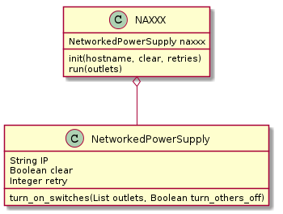

The NAxxx is a Networked Alternating current control switch XXX (no one under age 17 admitted) adapter.

| Exception | Cause |
|---|---|
| NaxxxError (AffectorError) | Unable to connect to the NAXXX |
| FaucetteError (ConfigurationError) | Unable to coerce outlets to integers |
| Label | Value |
|---|---|
| Signature | _clean_outlets(outlets) |
| Accepts | ListType TupleType or anything which can be cast to an IntegerType |
| Returns | List of integers |
| Raises | FaucetteError if the list can’t be built. |